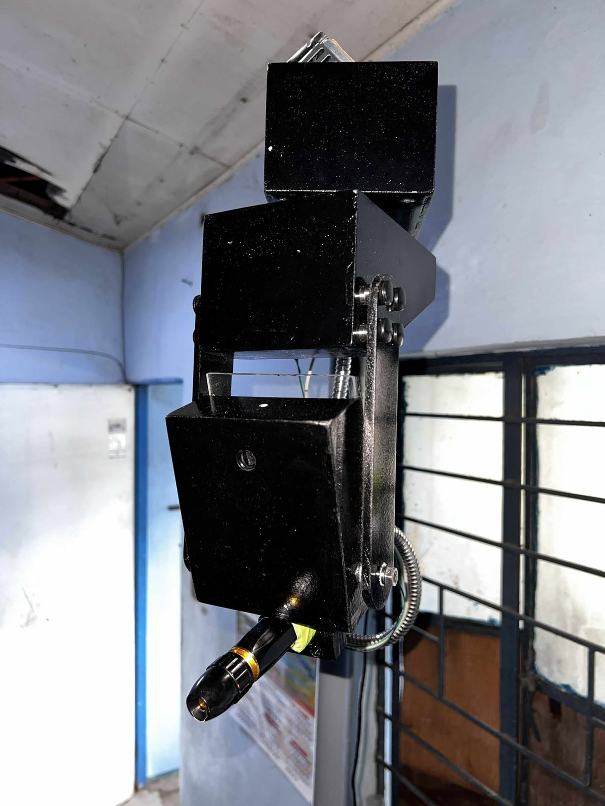

Thesis project · BS Computer Engineering
Automated Fire and Smoke Detection
An AI system that spots fire and smoke on camera, then triggers a suppression system on its own. Built and defended as my thesis at FAITH Colleges.

Overview
Fires grow fast, and a few seconds can decide the damage. This system watches camera feeds, uses a trained model to detect fire and smoke, and sends a trigger signal that activates suppression automatically, while raising an alert on a monitoring screen.
I led the team and built the software and hardware integration: the detection pipeline, the relay trigger logic, the monitoring interface, and the testing.
The problem
Conventional smoke detectors react only after smoke reaches them, and they only sound an alarm. Someone still has to respond. The goal was a system that detects visually and acts without waiting for a person.
How it works
- CameraCCTV and infrared inputs
- Laptopruns the detection model
- AI detectionfire and smoke model
- Trigger signalsent through a relay module
- Suppressionactivates automatically
- Alert and monitoringlive feed on localhost
Measured performance
Valid set. Mean average precision at 50% overlap: how well the model finds fires and smoke and places the box correctly.
Valid set. Of everything flagged as fire or smoke, this share was real. High precision means fewer false alarms and fewer needless suppression triggers.
External test. Of all real fire and smoke instances, this share was found. Measured on external data the model had not trained on.
Detection to action. Repeated trials ranged from 4.5 to 7 seconds from detection to suppression activation.
Testing
The system was tested indoors against multiple fire and smoke scenarios, with accuracy measurement, performance validation and repeated response-time trials. The detection model ran on a laptop connected to the cameras and the relay hardware.
Photos
Design decisions
- Dual camera input. A CCTV camera and an infrared camera together improve detection reliability.
- Relay-based actuation. A relay module lets the software trigger the suppression hardware safely through a simple signal.
- Local monitoring interface. A localhost interface shows live feeds and system status on any connected screen.
- Honest metrics. Results are reported as mAP, precision and recall, not a single accuracy figure.
Challenges solved
- Balancing precision and recall so the system catches real fires without needless triggers
- IP camera calibration, height mapping and directional setup for good coverage
- Integrating software detection with physical hardware reliably
- Keeping response time within a few seconds
Key achievements
- Led a four-person team from concept to a working, defended system
- Built both the software pipeline and the hardware integration
- Reported 83.6% mAP@50, 90.5% precision and 74.4% recall
- Delivered a 4.5 to 7 second detection-to-suppression response